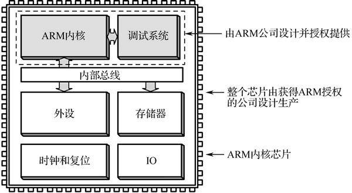

首页 > 编程笔记
ARM是什么
ARM 有两个含义，一是指 ARM 公司，二是指采用 ARM 内核的芯片。
Acorn 公司起初打算使用摩托罗拉的 16 位芯片，但是发现这种芯片运行速度慢且价格高，转而向 Intel 公司索要 80286 芯片的设计资料，但是遭到了拒绝，于是决定自行研发芯片。
1985 年，Acorn 公司的 Roger Wilson 和 Steve Furber 带领的团队设计出自己的第一代 32 位、6MHz 处理器，他们用它做出了一台 RISC 指令集的计算机，简称 ARM（Acorn RISC Machine），ARM 名称由此而来。
ARM 公司现在既不生产芯片也不销售芯片，它只出售芯片技术（ARM 内核）授权，其他公司获得授权后，可以在 ARM 内核基础上进行扩展设计而生产出自己的芯片。
20 世纪 90 年代至今，采用 ARM 内核的芯片应用到世界范围，占据了低功耗、低成本和高性能的嵌入式系统应用领域的领先地位。
如果将采用 ARM 内核的芯片当作一台计算机，ARM 内核就相当于计算机中的 CPU。
与计算机的 CPU 一样，ARM 内核也不断升级，其版本主要有 ARM1～ARM11，在 ARM11 之后改用 Cortex 命名，并分成 A、R 和 M 三个系列：
1、ARM公司
1978 年 12 月，物理学家 Hermann Hauser 和工程师 Chris Curry 在英国剑桥创办了 CPU 公司，主要业务是为当地市场供应电子设备，1979 年公司改名为 Acorn 公司。Acorn 公司起初打算使用摩托罗拉的 16 位芯片，但是发现这种芯片运行速度慢且价格高，转而向 Intel 公司索要 80286 芯片的设计资料，但是遭到了拒绝，于是决定自行研发芯片。
1985 年，Acorn 公司的 Roger Wilson 和 Steve Furber 带领的团队设计出自己的第一代 32 位、6MHz 处理器，他们用它做出了一台 RISC 指令集的计算机，简称 ARM（Acorn RISC Machine），ARM 名称由此而来。
1990 年 11 月 27 日，Acorn 公司正式更名为 ARM 公司。RISC 意为“精简指令集计算机”（Reduced Instruction Set Computer），其支持的指令比较简单，所以功耗小、价格便宜，特别适合移动设备，早期使用 ARM 芯片的典型设备就是苹果公司的牛顿 PDA。
ARM 公司现在既不生产芯片也不销售芯片，它只出售芯片技术（ARM 内核）授权，其他公司获得授权后，可以在 ARM 内核基础上进行扩展设计而生产出自己的芯片。
20 世纪 90 年代至今，采用 ARM 内核的芯片应用到世界范围，占据了低功耗、低成本和高性能的嵌入式系统应用领域的领先地位。
2、ARM内核芯片
ARM 公司将 ARM 内核的技术资料（比如内核的电路和设计文件等）授权给其他公司，这些公司在 ARM 内核的基础上进行扩展设计（比如增加存储器、IO 接口和片上外设等），再生产出芯片，该芯片称作 ARM 内核芯片，简称 ARM 芯片，其结构如下图所示。

图：ARM 内核芯片的结构
图：ARM 内核芯片的结构
如果将采用 ARM 内核的芯片当作一台计算机，ARM 内核就相当于计算机中的 CPU。
与计算机的 CPU 一样，ARM 内核也不断升级，其版本主要有 ARM1～ARM11，在 ARM11 之后改用 Cortex 命名，并分成 A、R 和 M 三个系列：
- Cortex-A 系列面向基于虚拟内存的操作系统和用户应用（如智能手机、平板电脑和机顶盒等）；
- Cortex-R 系列用作实时系统（如硬盘、打印机、蓝光播放器和汽车等）；
- Cortex-M 系列用作微控制器，STM32 单片机采用 Cortex-M 内核。
关注公众号「站长严长生」，在手机上阅读所有教程，随时随地都能学习。内含一款搜索神器，免费下载全网书籍和视频。

微信扫码关注公众号